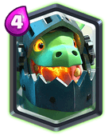

Legendary Card: Inferno Dragon

This card has been on a great rise. His popularity has increased by a great amount. And to be honest this card is pretty balanced. IN the current P.E.K.K.A. and Mega Knight meta he does a great job at countering them but is weak against hogs and eWiz.
He is great at killing tanks especially if you are able to distract/kill the support. The problem is that it can’t kill fast medium HP win conditions like Hog Rider and Battle Ram and cannot kill Siege win conditions unless you use a Mini Tank.
If you build a deck with right cards he is very good.
A main point to consider is that like Sparky, this card is better on defense than on offense.